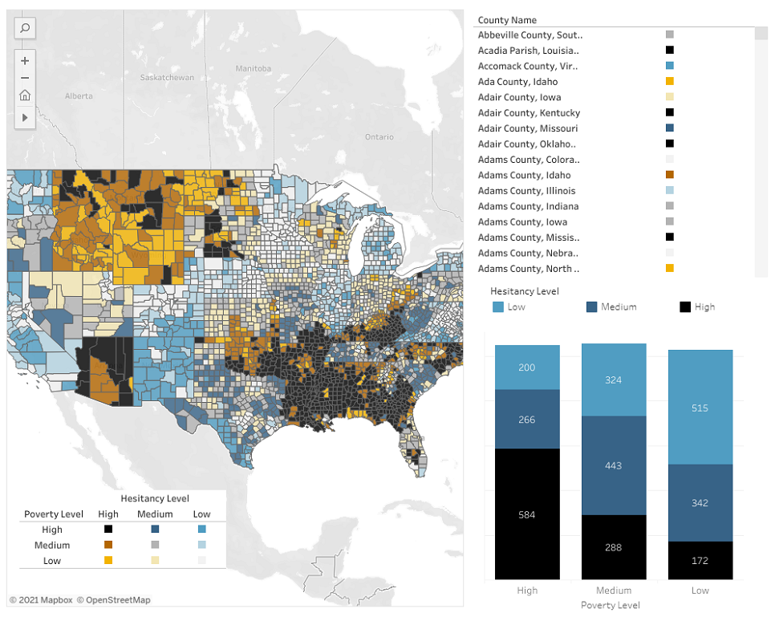

Vaccine Hesitancy: Supporting Pandemic Recovery
Interactive Web Data Visualization
I not only wanted to explore the geographic patterns of vaccine hesitancy rates in the United States, but I also wanted to utilize a unique mapping technique that allows us to communicate two variables with a bivariate color scheme. The techniques used are known as bivariate choropleth and value by alpha. Each can be difficult to interpret at times, but have the ability to reveal very interesting patterns.
Web LinkBack to portfolio
